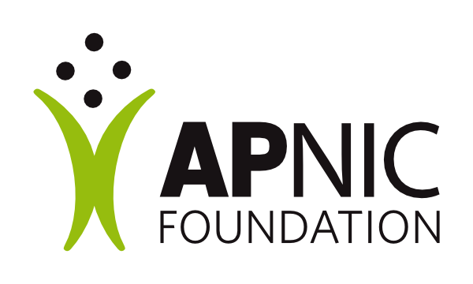
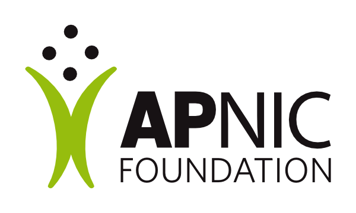

Asia Pacific – Generative AI Integration for National Research and Education Network (NREN) Empowerment and Development (AP-GAINED) is a transformative capacity-building initiative. Our mission is to empower National Research and Education Networks (NRENs) across the Asia Pacific region to leverage the power of Generative AI (GenAI).
We focus on implementing this project within NRENs in Least Developed Countries (LDCs) and Lower Middle-Income Countries (LMICs), while also developing a scalable model that benefits the wider community.

 
